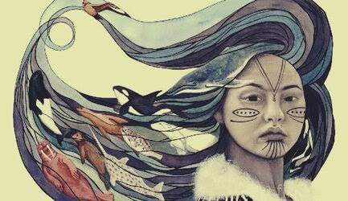
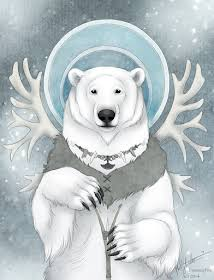
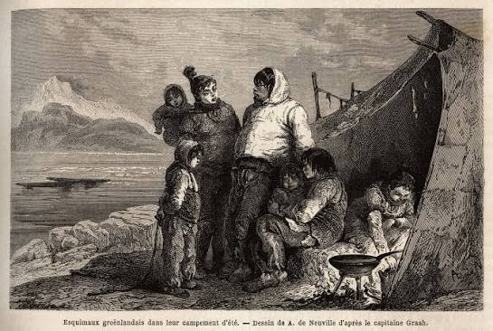

Quem são os Inuit?
Os Inuítes (ou Inuit) são povos indígenas que habitam regiões árticas do Canadá, da Groenlândia e do Alasca. Acredita-se que os antepassados da cultura Thule chegaram ao território canadense há cerca de mil anos, vindos do Alasca. O termo Inuit significa “gente” em inuktitut, enquanto Inuk se refere a uma única pessoa.
História
Os antepassados dos Inuit migraram do nordeste da Ásia para o Alasca através da região do Estreito de Bering em diferentes períodos. A cultura Thule, originada no Alasca, expandiu-se pelo Ártico canadense há cerca de mil anos. Ao longo da história, comunidades Inuit tiveram contatos com exploradores, pescadores e caçadores europeus, que buscavam recursos como peixes, baleias e peles. Esses contatos variaram de acordo com a região e o período.
Organização social
As formas de organização social variavam entre as comunidades e conforme as estações do ano. Em determinadas regiões, famílias se organizavam para caçar caribus, pescar e compartilhar recursos. As mulheres desempenhavam papéis fundamentais, incluindo a confecção de roupas adequadas ao frio extremo. A liderança podia ser flexível e ligada à experiência ou à tarefa necessária. Durante o inverno, reuniões comunitárias favoreciam histórias, cantos, jogos e a transmissão de conhecimentos.
Religião e mitologia
As tradições espirituais Inuit são diversas e estão ligadas à natureza, aos animais e ao equilíbrio entre os seres humanos e o ambiente. Em muitas tradições, especialistas espirituais conhecidos como angakkuq (plural angakkuit) exerciam funções de cura e orientação comunitária.
Sedna: figura associada ao mar e aos animais marinhos em diversas narrativas, conhecida por nomes diferentes conforme a região.
Nanook: nome associado ao urso-polar e, em algumas tradições, ao seu espírito ou mestre.
Tekkeitsertok: figura relacionada aos caribus em algumas tradições.
Sila: conceito ou entidade associado ao ar, ao clima e ao mundo ao redor, com significados que variam entre comunidades.
Em certas narrativas, quando Sedna se zangava, os animais marinhos tornavam-se escassos. O angakkuq podia realizar práticas rituais para restaurar o equilíbrio. As histórias e interpretações não são iguais em todas as comunidades Inuit.
Galeria de mitologia Inuit



Língua
Os povos Inuit vivem em uma vasta região ártica conhecida como Inuit Nunaat, que abrange áreas do Alasca, do Canadá e da Groenlândia. As línguas Inuit apresentam variedades regionais e estruturas que permitem combinar elementos para formar palavras complexas. No Canadá, são usadas variedades como o inuktitut e o inuinnaqtun; na Groenlândia, a língua predominante é o kalaallisut, também chamado groenlandês ocidental.
Cultura e tecnologia
A transmissão oral — por meio de mitos, cantos e histórias — tem grande importância em muitas comunidades Inuit. Ao longo de gerações, foram desenvolvidas tecnologias adaptadas ao ambiente ártico, como o caiaque, utilizado em deslocamentos e atividades de caça, e trenós puxados por cães, conhecidos em algumas regiões como qamutiik. O iglu, construído com blocos de neve compactada, era usado como abrigo temporário em contextos específicos, não como moradia de todos os Inuit. Roupas feitas com peles e outros materiais adequados ajudavam a proteger contra o frio intenso.
Curiosidade
O termo “esquimó” foi usado historicamente para designar diferentes povos do Ártico, mas pode ser considerado impreciso ou ofensivo em muitas regiões. Por isso, é preferível usar o nome específico pelo qual cada povo se identifica, como Inuit, respeitando também as diferenças entre comunidades.